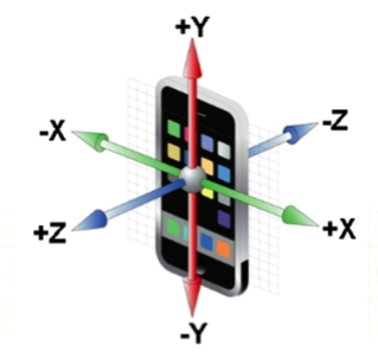

加速计
一.加速计的介绍
- 加速计的作用:用于检测设备的运动（比如摇晃）
- 加速计的经典应用场景
- 加速计的原理
- 检测设备在X、Y、Z轴上的加速度 （哪个方向有力的作用，哪个方向运动了）
- 根据加速度数值，就可以判断出在各个方向上的作用力度
二.获取加速计的值
1.旧的API获取
- 在iOS4以前：使用UIAccelerometer，用法非常简单（到了iOS5就已经过期）
- 虽然UIAccelerometer已经过期，但由于其用法极其简单，很多程序里面都还有残留
- (void)viewDidLoad {
[super viewDidLoad];
UIAccelerometer *accelerometer = [UIAccelerometer sharedAccelerometer];
accelerometer.delegate = self;
accelerometer.updateInterval = 1.0;
}
- (void)accelerometer:(UIAccelerometer *)accelerometer didAccelerate:(UIAcceleration *)acceleration
{
NSLog(@"x:%f y:%f z:%f", acceleration.x, acceleration.y, acceleration.z);
}
2.新的API获取
- 从iOS4开始,苹果专门封装了一个和运动相关的框架:CoreMotion框架
- 可以通过该框架来获取加速计的数值
- 获取加速计也有两种方式
- push方式:实时采集所有数据（采集频率高）
- 创建运动管理者对象
- 判断加速计是否可用
- 设置采样间隔
- 开始采集数据
- pull方式:在有需要的时候，再主动去采集数据
- 创建运动管理者对象
- 判断加速计是否可用
- 开始采样
- 需要时通过运动管理者去获取数据
- push方式的代码实现
if (!self.mgr.isAccelerometerAvailable) {
NSLog(@"加速计不可用");
return;
}
self.mgr.accelerometerUpdateInterval = 1.0;
[self.mgr startAccelerometerUpdatesToQueue:[NSOperationQueue mainQueue] withHandler:^(CMAccelerometerData *accelerometerData, NSError *error) {
if (error) return;
CMAcceleration acceleration = accelerometerData.acceleration;
NSLog(@"x:%f y:%f z:%f", acceleration.x, acceleration.y, acceleration.z);
}];
if (!self.mgr.isAccelerometerAvailable) {
NSLog(@"加速计不可用");
return;
}
[self.mgr startAccelerometerUpdates];
CMAcceleration acceleration = self.mgr.accelerometerData.acceleration;
NSLog(@"x:%f y:%f z:%f", acceleration.x, acceleration.y, acceleration.z);